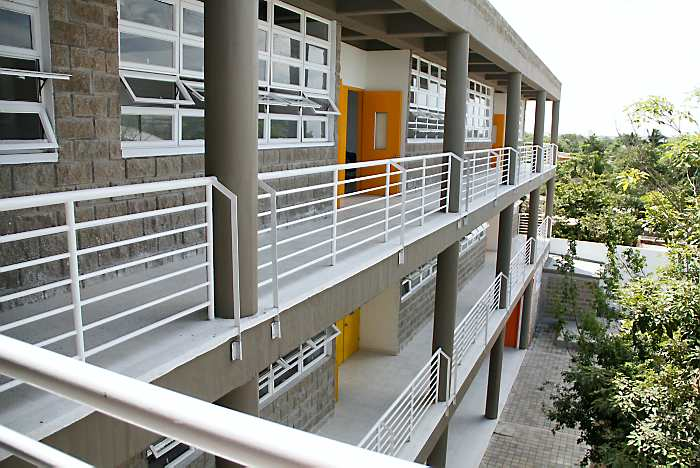
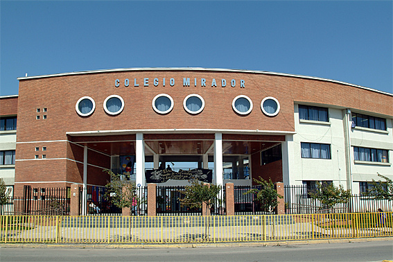

“La educación no crea al hombre, le ayuda a crearse a sí mismo” M. Debesse


.jpg)
Puede entenderse como el abandono del sistema escolar por parte de los estudiantes, provocado por la combinación de factores que se generan tanto al interior del sistema como en contextos de tipo social, familiar, individual y del entorno. La tasa de deserción intra-anual solo tiene en cuenta a los alumnos que abandonan la escuela durante el año escolar, ésta se complementa con la tasa de deserción interanual que calcula aquellos que desertan al terminar el año escolar.

La deserción es un problema que no solamente afecta al desarrollo del
individuo que esta dejando de asistir a la escuela si también a la sociedad en la que se desenvuelve.
El abandono escolar se da por diferentes factores que influye a que deserten sus estudios los más comunes en los alumnos
son:
¿Será posible comparar con la misma vara los resultados de las pruebas Icfes de los colegios oficiales con los del sector
privado?
Creemos que no. En los colegios privados de gran renombre sus alumnos tienen todas las ventajas tecnológicas en la
institución y en la casa, acompañamiento del padre de familia, cursos extracurriculares, alimentación, etc. Además, dichos
centros educativos retiran a aquellos alumnos que no alcanzan un promedio mínimo en sus resultados académicos.
Al finalizar tiene un producto de muy buena calidad.
En cambio las cosas en el sector oficial son bien diferentes. Existen unas políticas educa-tivas bastantes flexibles. Hay
alumnos que pasan los cursos debiendo nivelaciones de años anteriores, a pupitrazo limpio se les "regala" el año a los
alumnos por cuenta del tristemente famoso 5%. Los estudiantes no cuentan con las mismas herramientas tecnológicas y el
apoyo del padre de familia es casi nulo. Hacer actividades extracurriculares es perder el tiempo.
Al finalizar tenemos
un producto con bastantes deficiencias. Claro hay excepciones a la regla, pero son casos aislados, propios de la voluntad
del que quiere salir adelante.
Dadas así las cosas, es difícil poder com-parar.